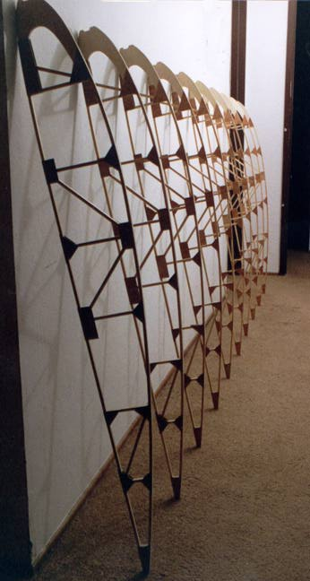

|  | Here are the first 10 ribs completed. I couldn't help but line them up to get a hint of what is to come. The volume of a wing can not be appreciated by holding a single rib in your hand. A finished wing will not have 10 similar ribs however, as allowance must be made for the ailerons, as well as local reinforcement of the spars where struts and wires attach.
Sharp eyes will notice a couple pieces missing. To allow easier assembly to the spars, two vertical trusses, and their diagonal braces, were left out. these will be added when the spars are in place. Copyright 1998
|